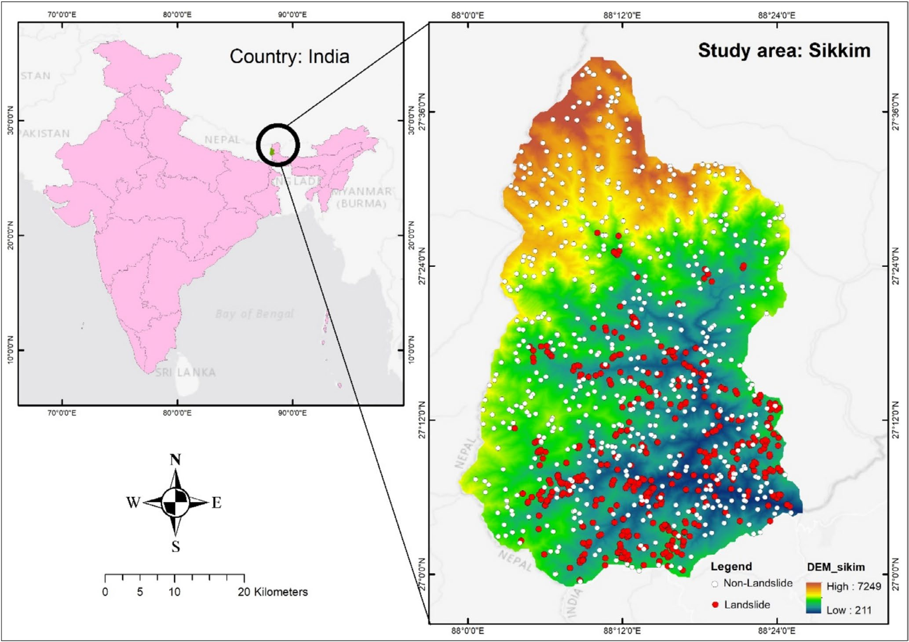
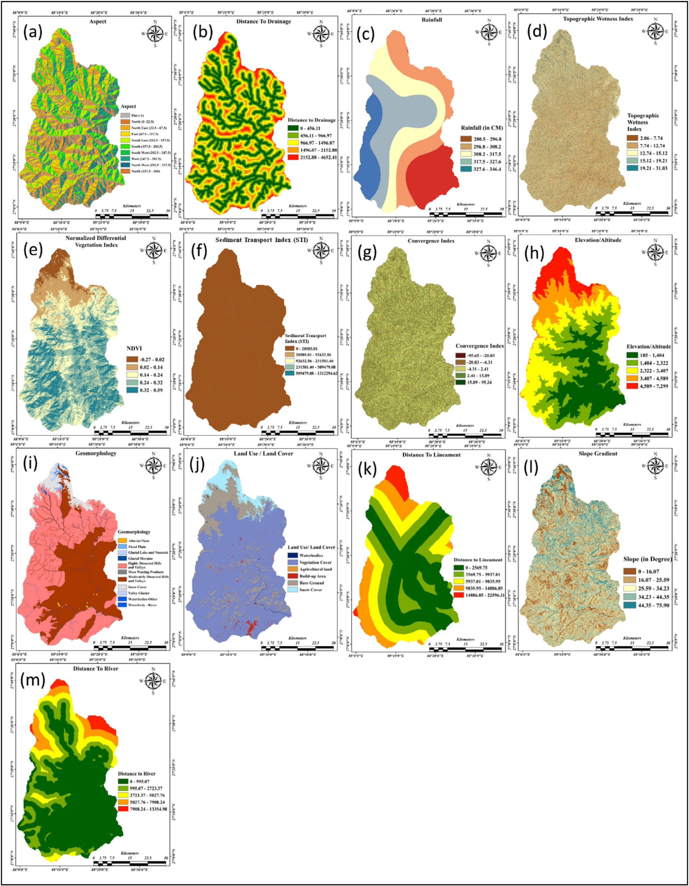
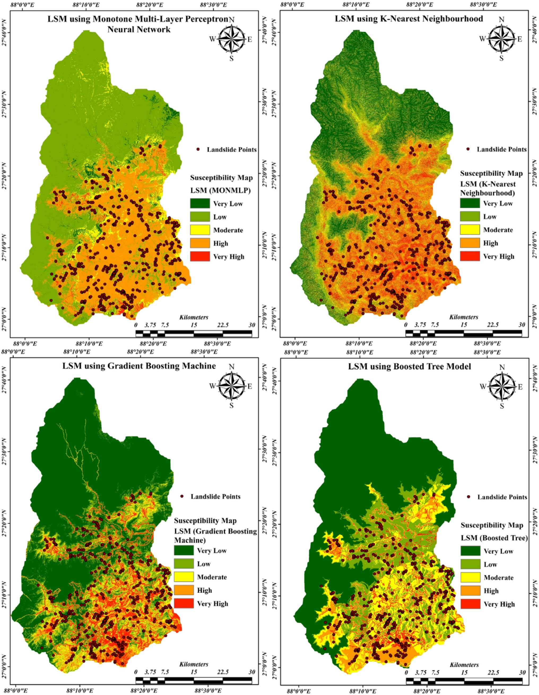
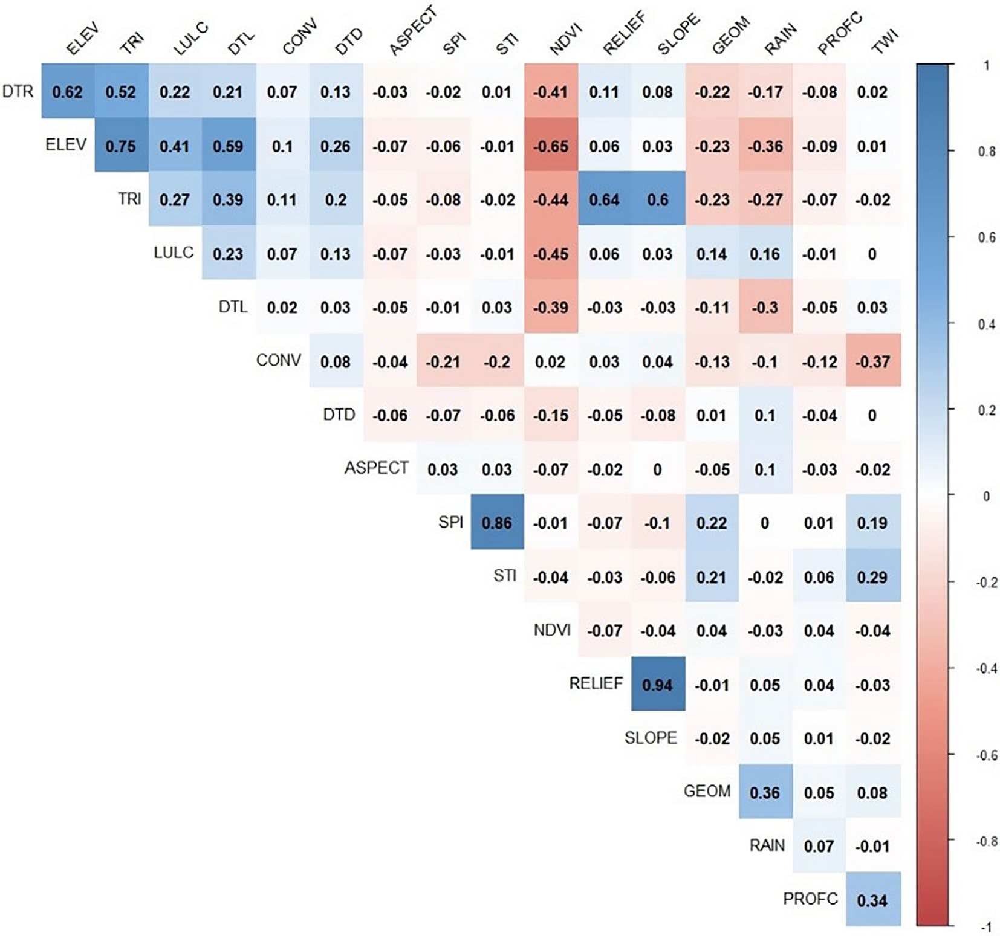
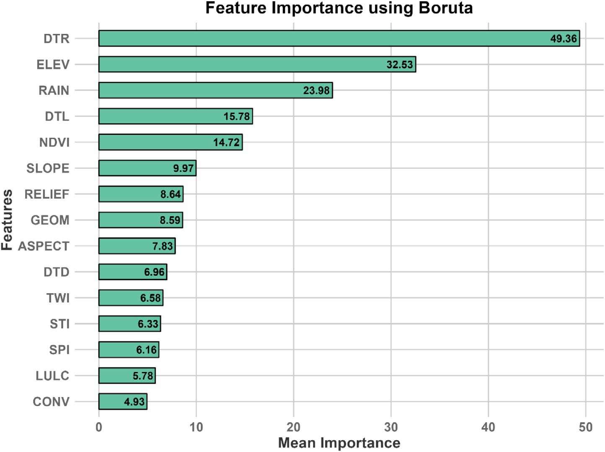

A comparative study of four machine learning models for landslide susceptibility assessment in the Sikkim Himalaya, with Gradient Boosting Machine achieving a peak AUC of 0.99.
A six-stage pipeline combining ensemble and neural network approaches for landslide susceptibility mapping.
1,456 landslide inventory points mapped. 15 initial conditioning factors derived from DEM, geology, climate, and land use data for Sikkim Himalaya.
Correlation analysis, Boruta model, and multicollinearity tests (VIF). Reduced 15 factors to 13 key parameters. DTR showed highest Boruta importance (49.36).
Four algorithms: Boosted Tree (BT), Gradient Boosting Machine (GBM), K-Nearest Neighbour (KNN), Multilayer Perceptron (MLP). 10-fold cross-validation repeated 3 times.
Study area classified into 5 zones: Very Low, Low, Moderate, High, Very High for each ML model.
Training AUC: BT 0.967, GBM 0.969, MLP 0.898, KNN 0.828. Testing AUC: GBM 0.99, BT 0.965, MLP 0.940, KNN 0.895.
Confusion matrix validation. Wilcoxon Signed-Rank Test for model comparison. GBM: F1=0.894, Accuracy=89.4%. BT: F1=0.874, Accuracy=87.8%.
Sikkim, a state in the north-eastern Himalayan region of India characterized by steep terrain and Zone IV seismicity.
Evaluating four machine learning models through AUC comparison and confusion matrix validation.





DTR dominated as the most critical conditioning factor at 43.99% importance.
Percentage of study area classified into five susceptibility zones by each ML model.
| Model | Very Low | Low | Moderate | High | Very High |
|---|---|---|---|---|---|
| BT | 47.19% | 18.79% | 20.75% | 5.94% | 7.32% |
| GBM | 54.39% | 15.00% | 11.00% | 8.00% | 11.70% |
| KNN | 25.94% | 14.18% | 11.94% | 32.63% | 15.32% |
| MLP | 1.77% | 53.90% | 7.06% | 36.04% | 1.17% |
Six principal outcomes from the landslide susceptibility analysis.
Gradient Boosting Machine demonstrated exceptional predictive performance with AUC of 0.99 on testing data, outperforming all other models.
Diurnal Temperature Range dominated variable importance at 43.99%, followed by elevation (21.59%). Temperature variability is the strongest landslide predictor.
GBM identified 303.85 ha (11.7%) as very highly susceptible, while 54.39% showed very low susceptibility. Most risk concentrated in specific geological zones.
MLP achieved only 48.6% accuracy with F1 of 0.096 due to extremely low recall (0.051). Wilcoxon test confirmed significant difference vs BT (p=0.018).
Three-stage feature selection (correlation, Boruta, VIF) reduced 15 to 13 factors, eliminating multicollinearity while retaining predictive power.
Susceptibility maps provide decision-makers tools for land use planning and risk mitigation in landslide-prone Sikkim. GBM recommended as primary model for future assessments.
Published in Geological Journal as an open access article.
Geological Journal, 2025
This study applied four machine learning models -- Boosted Tree (BT), Gradient Boosting Machine (GBM), K-Nearest Neighbour (KNN), and Multilayer Perceptron (MLP) -- for landslide susceptibility mapping in Sikkim, India. A total of 1,456 landslide inventory points were mapped across the 2,720 Ha study area.
Thirteen conditioning factors were selected through a three-stage feature selection pipeline (correlation analysis, Boruta model, and VIF multicollinearity tests). GBM achieved the highest predictive accuracy with an AUC of 0.99, followed by BT (0.965), MLP (0.940), and KNN (0.895).
The findings demonstrate that ensemble-based methods significantly outperform neural network approaches for landslide susceptibility assessment in the Sikkim Himalaya, providing actionable risk maps for land use planning and disaster mitigation.
Read the full paper →